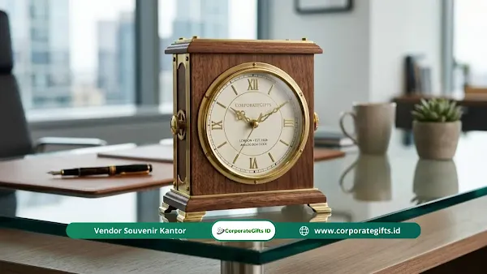

Corporate Gifts ID - Buka puasa bersama kantor sering kali hanya diisi ceramah singkat, makan prasmanan, lalu peserta langsung pulang. Padahal momen kumpul tahunan ini adalah kesempatan paling tepat untuk mencairkan suasana kerja yang kaku sekaligus mempererat hubungan antar divisi secara natural.
Banyak panitia atau tim HRD masih terjebak pada gaya undian monoton yang membuat karyawan memilih pulang lebih awal karena bosan menunggu. Padahal, kunci kesuksesan acara terletak pada kombinasi antara metode undian yang interaktif dan pilihan hadiah yang fungsional bagi keseharian karyawan.
Poin Kunci Doorprize Bukber Perusahaan:
- Interaktivitas: Ganti toples kocokan kertas manual dengan kupon gosok, spin wheel digital, atau game tantangan ringan.
- Fungsionalitas Hadiah: Utamakan barang bernilai guna harian seperti balmut, mug thermosensitive, atau gadget produktivitas.
- Sistem Tiering: Bagikan hadiah hiburan secara bertahap dan simpan grand prize di sesi penutupan agar peserta antusias hingga akhir.
- Sentuhan Branding: Sematkan logo korporasi secara elegan dan minimalis agar tetap terasa profesional.
Mengapa Undian Doorprize Konvensional Terasa Membosankan?
Banyak perusahaan masih memakai metode undian usang sehingga suasana acara terasa kaku seperti rapat formal, bukan momen kebersamaan yang santai dan menyenangkan.
- Sistem Kocok Kertas Sudah Kehilangan Daya Tarik: Mengambil gulungan kertas dari toples bening tidak lagi memberi kejutan berarti. Metode undian yang lebih interaktif membuat karyawan merasa dilibatkan secara penuh dalam dinamika acara.
- Kejutan Visual Mencairkan Hierarki: Kejutan yang dikemas dengan sentuhan emosional dan visual efektif meruntuhkan sekat canggung antara jajaran manajerial dan staf pelaksana, sekaligus menjadi media pelepasan penat kerja.
Ide Souvenir Custom Doorprize Bukber yang Fungsional
Dibanding sekadar membagikan payung lipat atau buku catatan standar, pilihan souvenir kantor fungsional berikut jauh lebih diminati karyawan karena dapat langsung dimanfaatkan untuk aktivitas kerja sehari-hari:
1. Mug Thermosensitive Berubah Gambar
Mug unik ini mampu memunculkan desain tersembunyi, seperti maskot perusahaan atau kutipan motivasi, saat dituangkan air panas.
- Fungsi Utama: Menemani jam kerja karyawan yang gemar minum kopi atau teh hangat di meja kerja.
- Catatan Pemesanan: Pastikan memilih mug dengan lapisan coating premium agar efek perubahan warna awet dan gambar tidak mudah terkelupas saat dicuci rutin.
2. Balmut (Bantal Selimut) 2 in 1 Custom Logo
Balmut adalah solusi praktis dan favorit bagi karyawan yang sering kedinginan akibat hembusan pendingin ruangan (AC) kantor.
- Fungsi Utama: Menjadi pendukung kenyamanan kerja (work-life balance) yang bisa digunakan saat istirahat siang di kubikel kantor.
- Catatan Pemesanan: Sematkan bordir logo perusahaan dengan gaya minimalis pada sudut selimut agar tetap terlihat rapi dan elegan.
3. Flashdisk Custom Bentuk Karakter / Produk
Bentuk flashdisk unik yang menyerupai karakter maskot atau miniatur produk perusahaan membuat cinderamata ini terasa eksklusif dan tidak pasaran.
- Fungsi Utama: Menyimpan file presentasi dan data pekerjaan harian dengan portabilitas tinggi.
- Catatan Pemesanan: Pastikan menggunakan material karet silikon tebal serta chip original bergaransi agar data pekerjaan tetap aman.

Koleksi hadiah doorprize custom berkualitas tinggi menghadirkan nilai apresiasi tulus bagi seluruh jajaran karyawan.
5 Cara Undi Doorprize Bukber Perusahaan yang Seru
Berikut lima metode undian interaktif yang terbukti ampuh mengubah suasana buka puasa bersama menjadi sangat meriah dan berkesan:
1. Metode Kupon Gosok DIY ala Lotre
Panitia membagikan stiker kupon gosok rahasia kepada seluruh karyawan bersamaan dengan sesi pembagian takjil pembuka. Seluruh peserta menggosok kupon secara serentak di meja masing-masing, menciptakan gelak tawa dan interaksi instan.
2. Punch Box (Lucky Box)
Peserta terpilih diminta meninju lubang papan kardus berlapis kertas tisu warna-warni untuk mengambil hadiah rahasia di dalamnya. Aktivitas fisik ringan ini sangat seru disaksikan oleh seluruh ruangan.
3. Treasure Hunt Berburu Harta Karun
Panitia menyembunyikan petunjuk atau stiker kecil di bawah kursi atau di balik piring meja prasmanan. Teka-teki yang diberikan mendorong peserta untuk saling berdiskusi dan bekerja sama lintas departemen.
4. Spin Wheel Digital dan Tantangan Balloon Pop
Menggunakan layar proyektor untuk menampilkan aplikasi roda putar digital (spin wheel). Pemenang yang namanya terpilih diwajibkan memecahkan balon kejutan tanpa alat bantu sebelum menerima paket doorprize.
5. Sesi Tebak-Tebakan Sebelum Hadiah Diserahkan
Sebelum hadiah diserahkan, pembawa acara memberikan tantangan tebak-tebakan logika ringan atau pertanyaan seputar trivia perusahaan. Rekan satu divisi diperbolehkan membantu menjawab agar suasana semakin kompak.
Tabel Perbandingan Metode Undian Doorprize
Gunakan matriks perbandingan berikut untuk memilih teknik undian yang paling sesuai dengan profil peserta dan anggaran acara Anda:
| Metode Undian | Perlengkapan Utama | Kapasitas Peserta | Dampak Suasana Acara |
|---|---|---|---|
| Kupon Gosok DIY | Kupon stiker scratch-off & koin | 30 - 300+ Peserta | Interaksi serentak & mencairkan suasana meja makan |
| Punch Box (Lucky Box) | Kotak kompartemen kardus & kertas tisu | 20 - 150 Peserta | Keriuhan seru & sorakan antusias antardivisi |
| Treasure Hunt | Stiker petunjuk & amplop petunjuk | 50 - 200 Peserta | Membangun kerja sama & komunikasi lintas tim |
| Spin Wheel Digital | Laptop, proyektor & aplikasi spin | 50 - 500+ Peserta | Transparan, adil, & menegangkan secara visual |
| Tebak-Tebakan Trivia | Mikrofon & daftar kuis interaktif | Semua Skala Peserta | Melibatkan seluruh audiens aktif menjawab |
Ide Doorprize Interaktif Lainnya: Explosion Box atau Prank Box
Untuk menambah keseruan, panitia dapat menyembunyikan hadiah bernilai di dalam kardus kemasan khusus yang dirancang meledak terbuka (explosion box) saat penutupnya ditarik. Isian potongan kertas warna-warni (confetti) akan berhamburan, menciptakan ekspresi kaget dan tawa yang sangat bagus untuk dokumentasi media sosial internal perusahaan.
Tips Manajemen Waktu Pembagian Doorprize
Penempatan waktu pembagian hadiah sangat menentukan alur emosi peserta. Terapkan strategi bertahap (tiering) berikut:
- Sesi Pembuka: Bagikan hadiah hiburan berukuran kecil secara berkala di sela tausiyah atau menjelang azan maghrib agar peserta tetap fokus.
- Sesi Utama: Undi hadiah kategori menengah setelah sesi makan malam utama selesai.
- Sesi Penutup: Simpan hadiah grand prize utama hingga penghujung acara agar peserta tetap bertahan dan antusias sampai penutupan.
Kesimpulan & Saran Pengadaan
Rangkaian undian doorprize yang dirancang kreatif tidak hanya menjadi ajang bagi-bagi hadiah, tetapi juga instrumen penting dalam mempererat ikatan kekeluargaan antarkaryawan. Pastikan hadiah yang disiapkan memiliki kualitas material yang baik agar memberikan manfaat nyata dalam jangka panjang.
Sedang merencanakan pengadaan doorprize atau hampers buka puasa bersama kantor? Konsultasikan kebutuhan paket souvenir dan merchandise kustom perusahaan Anda bersama tim spesialis kami di layanan pengadaan souvenir kantor CorporateGifts.ID untuk mendapatkan penawaran harga terbaik dan sampel digital gratis.